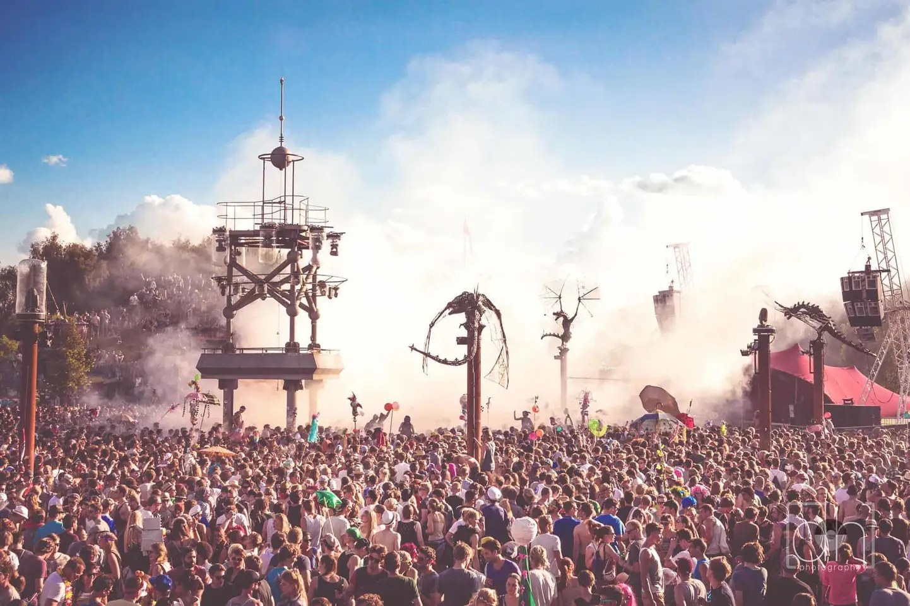

Germany's Fusion Festival: We Fought The Law, and Won
{kind=link}

What happens when 70,000 techno fans gather for a week at Germany’s Fusion Festival, which thanks to property laws, is the only event of this magnitude completely free of police patrols? Allow S:Mag to take you on a psychedelic, unifying, utterly life-changing ride across 25 stages over five full days through the largest non-commercial, alternative cultural festival in Europe...
Fusion Festival is the kind of event spoken of in hushed tones and with wide eyes. Its mystique is self-sustaining; there’s no glossy YouTube aftermovies or social media hype, let alone advertising or marketing of any kind. Its lineup is enviable to be sure – drawing upon the world-famous techno scene of nearby Berlin, plus the spectrum of electronic, experimental and live acts – though it’s not even announced until shortly before the week-long party kicks off.
Many outside of Europe mightn’t even have heard of Fusion, though it holds a cultural sway and otherworldly reputation comparable to the UK’s Glastonbury Festival. Similarly, you don’t actually “buy” a ticket to Fusion Festival. Instead, you register in the ticket lottery more than half a year before the event and then wait to discover if you’re among the 70,000 lucky ones who’ve been anointed by the festival gods as worthy of attendance.
Held for more than 20 years across the sprawling grounds of a former Soviet military airfield, about an hour north of Berlin – a setting showcasing the same “reappropriation” mentality that characterises Berlin’s iconic clubs like Berghain and Tresor, both of which commandeer former GDR power plants – Fusion Festival is far more than just a place where you go to immerse yourself in techno for a few days. It’s described by its organisers, the Kulturkosmos collective, as the “largest non-commercial, alternative cultural festival in Europe”, and this offers a fair starting point for capturing the festival’s bewitching atmosphere and energy.
Labelling it the “European Burning Man” offers a functional description, though it’s also lazy and does neither event justice. Both have decades of heritage and history, and both have cultivated during that time, completely independent of each other, their own unique approach to countercultural escapism, based around the idealistic notion that another world can exist outside the constraints of the urban existence.
Fusion Festival doesn’t have an aesthetic that’s easy to pin down, though what takes place around these former soviet hangers at the end of every June is a delicious treat for the imagination and so many experiences rolled into one. It's equal parts a production-perfect European techno festival; a dreadlocked, psychedelic “bush doof”; a sprawling art installation; with the sheer scale of its spectacle, like a grittier, earthier version of sparkly US behemoths like EDC Las Vegas. It’s the kind of transformational event that sounds overhyped for those who haven’t attended, and then proceeds to live up to that hype in ways you couldn’t have imagined.
Festival Battlegrounds: Fusion vs Polizei
Arguably the most incredible thing about Fusion Festival is that due to private property laws in Germany, and the fact Kulturkosmos purchased the festival grounds in 2003, it’s an event that is entirely free of police patrols or state intrusion of any kind. That’s right, 70,000 partygoers embark on potentially a week-long experience (starting Wednesday and stretching to Tuesday for those so inclined) without even a single police loitering around and monitoring their behaviour. The festival runs its own security and provides 10,000 staff to cater for attendees, though not a single police. This is in stark contrast to Burning Man, which has come increasingly under the hammer from Nevada authorities who’ve escalated surveillance in recent years.
What’s also fascinating is how this unprecedented freedom translates into an accompanying sense of personal responsibility among festivalgoers, who look out for themselves and everyone around them. It’s an idealistic notion backed up by supporting police statistics that point to Fusion’s impeccable history of punter safety in spite of its large size. Beyond the Kirchentag church convention that caters annually to Germany’s evangelical demographic, Fusion Festival remains the country’s most peaceful large-scale event. Run for 22 years without a single drug-related death or serious injury, equally, violent crimes are rare and actually diminishing. There was a maximum of seven reported incidents in 2012, though this had fallen to a single incident in 2016 with an average of 2.5 per event during this time period.
Kulturkosmos encourages a culture of communication and dialogue with those attending the festival – conducted via their email mailing list, rather than a more public forum like Facebook – and in January actually extended an apology for its slowness in responding to questions about the upcoming event, acknowledging that, “for months now, we have simply not lived up to our responsibility to be transparent with you, our guests, or the various festival crews.” However, it wasn’t long before bigger issues were on the table for discussion.
"It’s the start of May and preparations for the upcoming festival are in full swing. Almost the entire programme has been finalised, we’re bursting with excitement, and we cannot wait for the festival to finally start. That would pretty much have been the message of this newsletter, were it not for this stuff with the police that we have been dealing with for weeks now."
Only a few days before, a dispute with state police that had brewed for months spilt over into the public domain, when the region’s Chief of Police slipped a report to the German Press Agency. It claimed “safety deficiencies” existed with the Soviet Hangars that hosted several smaller stages, as well as issues relating to evacuation procedures and alleged lack of a public address system for emergencies. In response, police demanded an onsite station and random patrols of the festival grounds. The Chief of Police pointed out this is common at similar events.
Kulturkosmos insisted the hangers had been fixtures on the site for 22 years and its evacuation procedures always approved by the relevant authorities. It claimed the safety red flags were actually a smokescreen to hide a different agenda.
“[T]here will always be something lacking, and here we come to the real reason why the Chief of Police does not want to approve our [safety plans]… the police do not want to allow Fusion to happen without their supervision and surveillance… they want to take the huge step of placing a police station on the festival site and patrolling the entire area without specific reason.
"[T]he Chief of Police for Neubrandenburg… clearly wants to disrupt the festival; he wants to regulate, control and display authority in accordance with his own normative standards. He points to deficits in our safety concept and does not offer any type of security expertise that would substantiate his claim that a police presence is necessary.”
"For weeks now and with the help of legal counsel, we have been negotiating with the authorities and with the police at the highest levels. We offered a compromise solution but also set out our red lines."
The proposal offered by Kulturkosmos involved a police station on the airfield outside the fenced-off festival site, allowing festivalgoers to reach police by foot. However, neither police patrols without cause, or a station within the boundaries of the festival, was accepted by the organisers. This proposal was rejected by the police, who threatened cancellation of the event.
Kulturkosmos put its fists up. The next stage was taking the dispute to the local administrative court to contest the police demands, and if necessary, taking legal action against an injunction. Kulturkosmos argued, with the support of its lawyers, the police demands were unlawful.
"The police justify their plan for this large-scale operation with their responsibility to ‘protect against threats to public safety’. We are really asking ourselves which dangers exactly the police are to ward off here? Over the years, we’ve had a great relationship with the relevant authorities, medical services, fire department, our security personnel... Together, we have created a full and comprehensive structure for safety and risk assessment... which is constantly being reviewed and updated. As part of this, precautions, measures and solutions have been developed to handle relevant risks and potentially dangerous situations.
It was obvious that police demands were a thinly-veiled pretence for the introduction of comprehensive controls to remain over the long-term; a “fundamental intrusion into our party culture”, as bluntly described by Kulturkosmos. Though it’s worth emphasising that this “party culture” runs deeper than pure messy hedonism.
“Anyone who knows the festival, knows that its tens of thousands of left-wing and alternative guests, makers and doers strongly identify with the ideals of the festival and value the freedom that they collectively experience there. This is also about much more than the future of our beloved festival.”
An Unexpected Victory
The ensuing debate inspired widespread solidarity, evolving into a bigger question of whether any genuinely free spaces can still exist that aren’t subject to state-imposed social control. Kulturkosmos framed the dispute as relating to the freedom of cultural and artistic spaces to define their own destiny. A petition climbed to more than 120,000 signatures, though it was also accompanied by a sympathetic and supportive response from the media.
In spite of this solidarity, few expected Kulturkosmos to prevail in their show of defiance. A free space on that scale seemed like a beautiful indulgence destined to end. However, this just made the eventual legal victory even sweeter. Approval was granted weeks before the festival was due to begin, its revised safety procedures accepted and police withdrawing their demands.
The organisers extended thanks not only to the festival’s community but also those in the surrounding region of Mecklenburg-Vorpommern who stepped forward in support (“the people who know and appreciate the essence of Kulturkosmos”). Similar support flowed from across Germany; “even those who themselves have never been, but nevertheless supported our demand for restrictions to be placed on police power and the increasing fixation on more and more surveillance. Last but not least, the media. After more than 20 years of PR abstinence, we were overwhelmed with the standard of high-quality and critical reporting.
“It was just incredible to see how our call for open cultural spaces free from surveillance resonated so much in the public sphere. We could never have imagined that it could have been so well received.”
Getting Lost at Fusion Festival
Once you’ve completed your rite of passage of commuting to the airfields and finding a place to pitch your tent - the camping grounds more than an hour’s walk end to end - your first seminal Fusion Festival moment inevitably arrives after midnight once the summer sun finally sets.
One of its biggest stages is the Turmbühne, a flat sprawl with multiple circular arrays of speakers that stretch to the rolling mountains containing the Soviet bunkers (home to their own respective stages). It’s a space that seems to expand exponentially as the crowd swells from several hundred to tens of thousands, sound piping out crystal clear wherever you’re standing. In the centre of the speaker arrays is an industrial tower, cogs turning and wheels spinning, formidable enough during the day though somehow growing infinitely once darkness falls, rising to the height of an office block. One of the nearby mountains is conveniently fitted out with a wooden staircase that allows you to climb and view the spectacle in all its glory, the smoke and lasers rising and falling over the crowd to a gritty soundtrack of tough techno.
All in all, there are 25 different stages at Fusion Festival, each with its own distinct personality and curation duties handed over to an assortment of music and cultural collectives.
Beyond the many bunker stages dug into the sides of mountains, there’s the Tanzwüste stage, nearly equal in sprawl to the Turmbühne, the same circular arrays of speakers stretching into the distance with a cracked industrial mirrorball in its centre, light beams emanating from every moving part. Flanked in every direction by steampunk props; an eye hovering watchfully over the dancefloor, its paper-mâché eyelid blinking as it folds closed and opens again.
The Sonnendeck stage offers a visual treat straight from Belgium’s Tomorrowland, a colourful castle-like stage lights up like neon at night. Staggering towards the Trancefloor after dark is like tumbling headfirst into Alice’s Wonderland, the thick, bright colours of its lighting, lasers and decorations matched by the outlandish costumes of the energetic crowd.
Elsewhere there’s a purpose-built club pumping out drum & bass and dubstep, as good as any nightclub across Europe. The Panne Eichel stages in the festival’s far north corner are soundtracked by sumptuous deep house grooves, sand underfoot and a decadent canopy of trees overhead that prove invaluable for when the scorching summer temperatures grow unbearable (because it’s a long walk to the creek in the far south corner).
All these stages are important pieces of the Fusion puzzle, though to focus only on the techno hardly does justice to what’s really a tremendous week-long cultural commune. There’s a travelling carnival vibe, and more contemporary art, theatre, cinema, and performances than you can poke a stick at. The possibilities stretch on for as long as you care to lose yourself in it.
Walk around one corner and you’ll stumble across hundreds of mesmerised gathered in a circle an athletic cast of fire eaters and jugglers; walk around the next and you’ll gape in disbelief at bombastic circular patterns carved into a forest of trees (a nifty trick of creative lighting). At the next stage, you’ll be stunned to see dozens of partygoers donned in the same elaborate costume; though again it’s just another trick of the eye achieved with clever lighting.
What resonates most are the countless moments of serendipity that comes from immersing yourself in a giant art installation, hand-crafted with an impossible amount of detail, secrets to be discovered in every corner. Even Europe’s best festivals, run to an incredible standard of production, typically throw up their infrastructure for the weekend before tearing it down again. In comparison, Fusion continues to build on its incredible foundations year after every year.
You’ll wander off the beaten track to find an elaborate assortment of wooden cubbyhouses that comfortably house hundreds; array upon array of intricately woven hammocks lit up by flickering strobe lights; tucked off adjacent to a stage as it merges into the forest you’ll find a labyrinth construction of snaking wooden piers, boats docked in the dirt and ready for throngs of people to climb into for chilling and assorted mischief. It is literally endless.
In the end, trying to capture it in words is futile. Fusion Festival exists in your imagination and remains there long after you’ve returned to reality. You might love your everyday life, though you’re still emerging from a psychedelic, colour-soaked fantasy realm that is impossibly free. All that’s left is sounding silly as you try to explain to someone who’s never seen it for themselves.